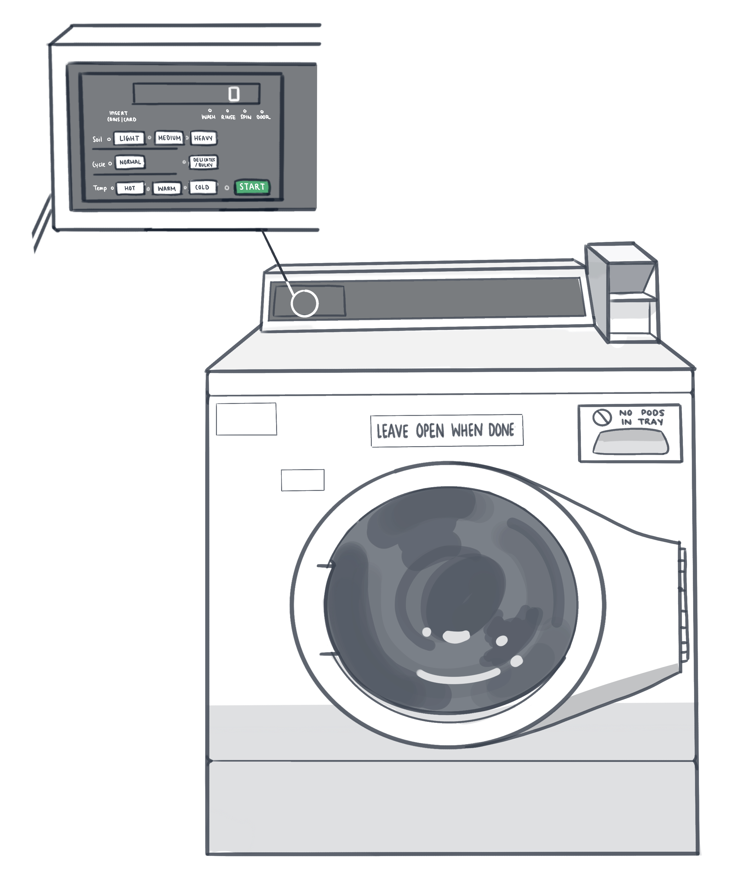

INTERFACE QUESTIONS
- Why are you using this machine?
- Need to do laundry
- Free right now, and even if we had to pay, it’s cheaper than buying my own washing machine or going to a laundromat
- More convenient than handwashing
- No other market for other washing machines
- What can you do on this machine?
- Open the door
- Put soap in soap tray
- See the different options for the wash cycles
- Press buttons
- View the timer for how long is left in the cycle
- How can you tell this machine is unoccupied/available?
- There are no clothes in the machine when you look into the glass or open the door
- There is no number displayed on the screen
- It is not making any noises or vibrating when you put your hand on it
- Press buttons
- How much (clothes) can you put in this machine? Typically, do you feel that you’re putting too much, too little, or not sure?
- I feel like too little, because I seperate my whites and darks – if I had to pay, I would probably feel like I’m wasting my money
- I don’t know what “too much” is when they say not to fill “too much”, but as long as my clothes are washing normally then it feels okay
- Generally try to put in as much as I can while leaving around ¼ of the space at the top
- How do you start the machine?
- Select the type of cycle and press start
- How do you know which buttons to press? Do you know what the buttons/settings mean?
- The washing machines are pretty clearly labeled, but I don’t necessarily know what the settings mean
- Read the directions at the top
- I know what the settings mean with these new machines more than last year
- You are able to see the different heat levels and the types of clothes that you put into the washer
- How do you know that the machine has started?
- Makes noises
- Starts spinning
- The timer starts on the screen
- Door clicks
- When the machine has started, what do you do? Are you able to open the door while it’s still running?
- After it starts, I go back to my room and set my own timer on phone
- Door is locked and you can’t open it
- No way to stop the cycle early or manually pause the cycle
- What tells you your clothes have finished washing?
- Timer on my phone goes off
- Look at the clock every 5 minutes
- The timer on the machine goes to 0 and the machine isn’t moving anymore
- The door is no longer locked
- Do you know how long it’s been since your clothes were ready? Since another person’s clothes were ready?
- There is no way to tell – the timer either says 0 or nothing, so there’s no way to tell how long a person’s wet clothes have been sitting there and occupying the machine
- I’m afraid of taking another person’s clothes out when they just finished washing, but would be more comfortable with it if they’ve been sitting there for hours
- How often do you need to change the default setting for the buttons? If/when you do, why do you change them?
- I use the same default setting every time because it works for me
- I change the settings every time, increasing detergent and temperature, so that my clothes are especially clean when they come out
- Seems like you can’t change them after you press start
- What do you think this machine can do better?
- The machine could allow more chances to pause in the middle
- Sometimes I forget to put in detergent, so I would have to run the cycle again after it finishes because I can’t open the door preemptively
- The machine could use more water, because multiple instances I feel like the my tide pod isn’t melting enough so there are still bits and pieces around my laundry after the cycle
- What do you find inconvenient about this machine?
- It’s hard to tell where the detergent goes, because the labels are so faint
- You can’t open the door during the cycle
- If you were in a wheelchair, would you feel confident that you could still operate/start this machine?
- I do not think I would be able to press the buttons because they’re pretty far back
- Must navigate around the door that opens from the side, and sometimes there’s no room to navigate
- Transfer from washer to dryer would be particularly difficult
- There is also no braille for visually impaired individuals
PERSONAS


STORYBOARDS
Hurried Harold in a rush to clean his clothes